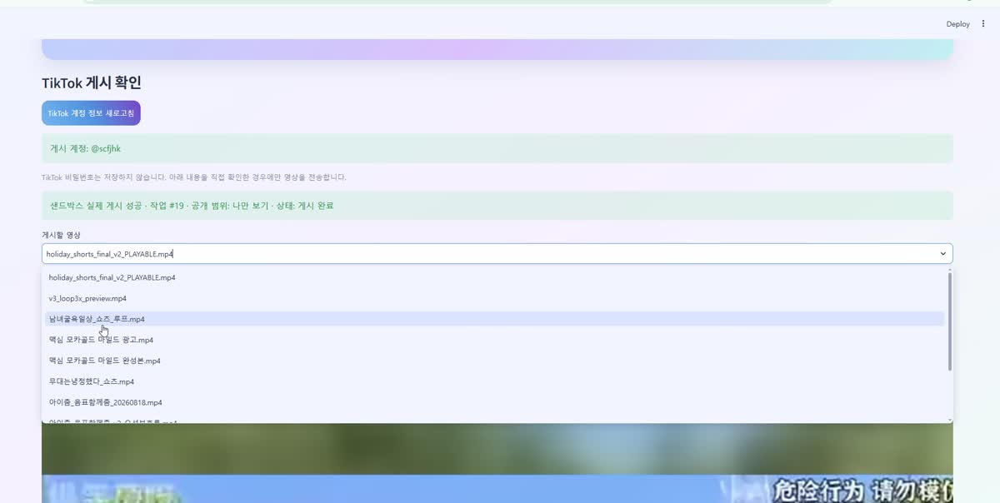
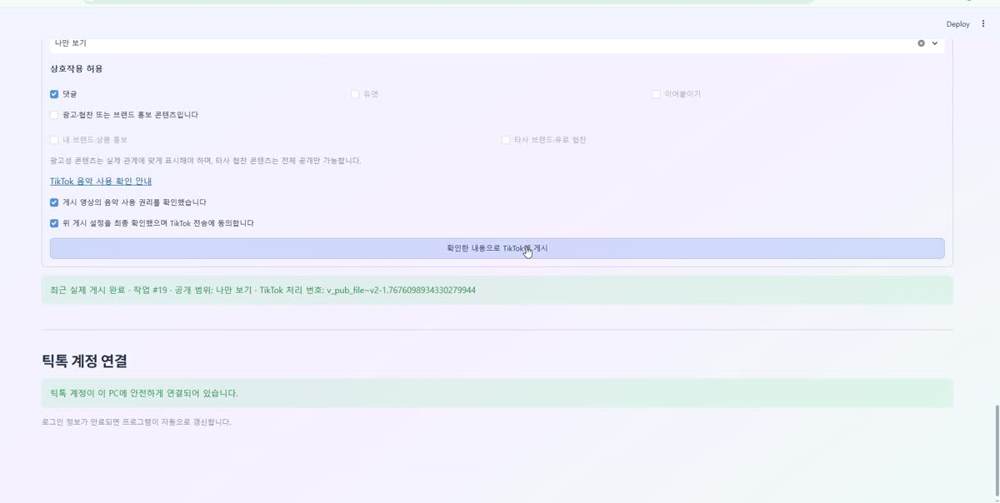
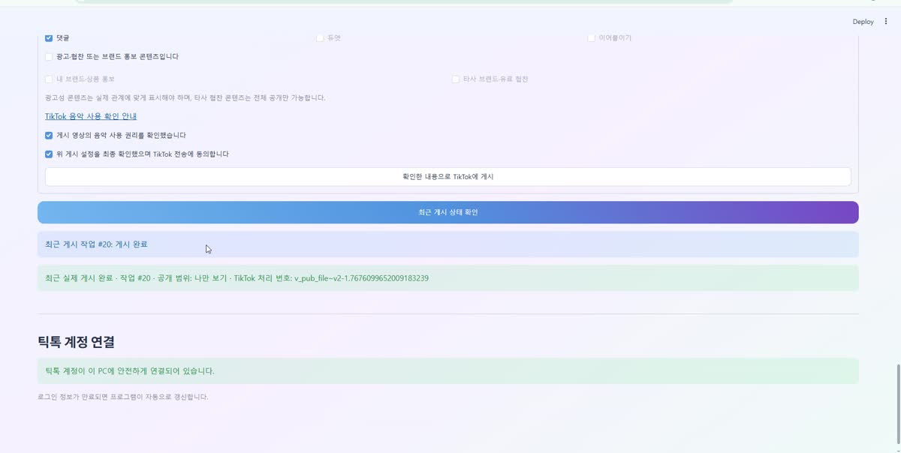

Eunha Shorts Center is a desktop application for short-form video creators. It watches a folder on your computer, drafts a title and hashtags for every new video, and posts each one to your own TikTok account at the time you choose — after you have reviewed and confirmed it.
Windows · Free · Runs entirely on your own computer.
Sign in through TikTok Login Kit. The app never sees or stores your TikTok password — only an access token, kept on your own computer.
Drop a finished video into your folder. The app proposes a title and hashtags, shows the video, and waits for you to approve.
Privacy options come from TikTok's Creator Info endpoint, so you only ever see the settings your own account actually allows.
Set the times of day you want to post. The app publishes at those times and records the result so you can see what went out.
Branded-content and paid-partnership toggles are shown before every post and sent to TikTok exactly as you set them.
Followers, total views, likes and comments for your own videos are collected twice a day and charted in one dashboard.



| Login Kit | Sign-in and account connection using OAuth 2.0 with PKCE. |
|---|---|
| Content Posting API | Direct Post. The video file is uploaded from your computer, and the app polls the status endpoint until TikTok reports the post is complete. |
| Display API | Reads your own account statistics and your own video list to build the performance dashboard. |
Every post requires an explicit confirmation from the account owner. The app does not post on its own, does not touch anyone else's account, and does not share your data with any third party.
On your computer. Video files, access tokens and collected statistics are stored in a local folder and a local database file. Nothing is uploaded to a server we control.
Yes. Remove the app's access from your TikTok account settings and delete the app's folder. That removes everything.
Nothing. It is a free tool.
More answers are on the Support page.